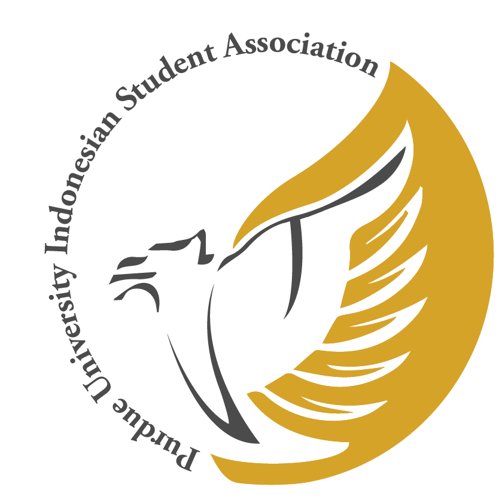

Vision & Mission

Inclusivity in Identity. No matter your age, background, gender, field of study, religion or race, all of us Indonesians and in PERMIAS are family. I believe in the power of solidarity and unity that comes within the sentiment of family and friendship.
Home away from home. The buddy system will ensure that every freshmen feels welcome upon arrival and get a chance to learn and synergize with their upperclassmen in the beginning of the semester. The system will also evoke the sense of family, friendship and communal support among Indonesians and bring out the best within our friends and ourselves.
To instigate activity and action within the Indonesian community as well as collaboration with other asian communities. We have always found the idea of colluding with other asian groups on campus as being a great beneficiary for PERMIAS and the Indonesian community. By collaborating with the Malaysians, Singaporeans, etc. We will get the opportunity to spread our sphere of influence on campus, which can result in incredible events. Moreover, such steps are key to shaping the image of PERMIAS as a community that is inclusive and willing to work with others.